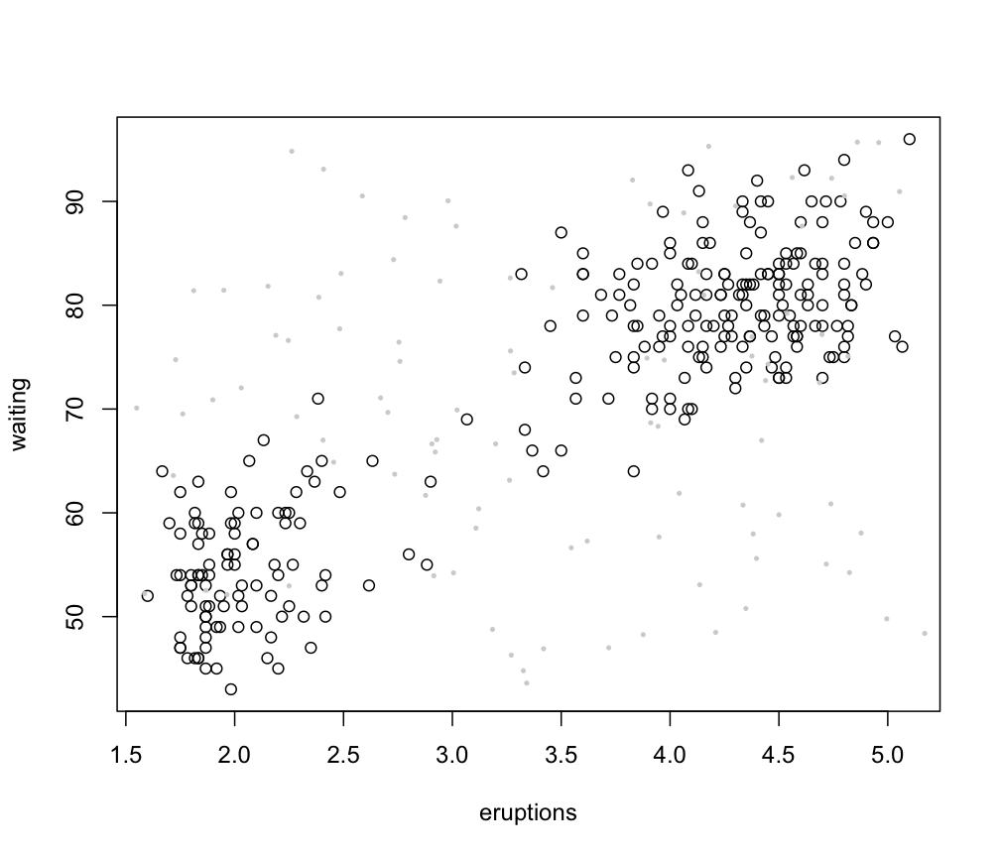
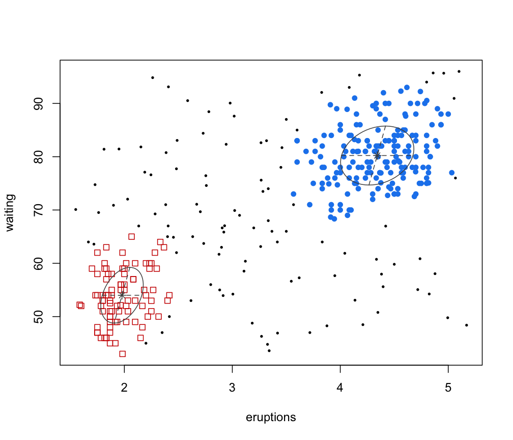

Model-Based Clustering
Mclust.RdModel-based clustering based on parameterized finite Gaussian mixture models. Models are estimated by EM algorithm initialized by hierarchical model-based agglomerative clustering. The optimal model is then selected according to BIC.
Usage
Mclust(data, G = NULL, modelNames = NULL,
prior = NULL,
control = emControl(),
initialization = NULL,
warn = mclust.options("warn"),
x = NULL,
verbose = interactive(), ...)Arguments
- data
A numeric vector, matrix, or data frame of observations. Categorical variables are not allowed. If a matrix or data frame, rows correspond to observations (\(n\)) and columns correspond to variables (\(d\)).
- G
An integer vector specifying the numbers of mixture components (clusters) for which the BIC is to be calculated. The default is
G=1:9.- modelNames
A vector of character strings indicating the models to be fitted in the EM phase of clustering. The default is:
for univariate data (\(d = 1\)):
c("E", "V")for multivariate data (\(n > d\)): all the models available in
mclust.options("emModelNames")for multivariate data (\(n <= d\)): the spherical and diagonal models, i.e.
c("EII", "VII", "EEI", "EVI", "VEI", "VVI")
The help file for
mclustModelNamesdescribes the available models.- prior
The default assumes no prior, but this argument allows specification of a conjugate prior on the means and variances through the function
priorControl.
Note that, as described indefaultPrior, in the multivariate case only 10 out of 14 models may be used in conjunction with a prior, i.e. those available in MCLUST up to version 4.4.- control
A list of control parameters for EM. The defaults are set by the call
emControl().- initialization
A list containing zero or more of the following components:
hcPairsA matrix of merge pairs for hierarchical clustering such as produced by function
hc.
For multivariate data, the default is to compute a hierarchical agglomerative clustering tree by applying functionhcwith model specified bymclust.options("hcModelName"), and data transformation set bymclust.options("hcUse").
All the input or a subset as indicated by thesubsetargument is used for initial clustering.
The hierarchical clustering results are then used to start the EM algorithm from a given partition.
For univariate data, the default is to use quantiles to start the EM algorithm. However, hierarchical clustering could also be used by callinghcwith model specified as"V"or"E".subsetA logical or numeric vector specifying a subset of the data to be used in the initial hierarchical clustering phase. No subset is used unless the number of observations exceeds the value specified by
mclust.options("subset"), which by default is set to 2000 (seemclust.options). Note that in this case to guarantee exact reproducibility of results a seed must be specified (seeset.seed).noiseA logical or numeric vector indicating an initial guess as to which observations are noise in the data. If numeric the entries should correspond to row indexes of the data. If supplied, a noise term will be added to the model in the estimation.
- warn
A logical value indicating whether or not certain warnings (usually related to singularity) should be issued. The default is controlled by
mclust.options.- x
An object of class
'mclustBIC'. If supplied, BIC values for models that have already been computed and are available inxare not recomputed. All arguments, with the exception ofdata,GandmodelName, are ignored and their values are set as specified in the attributes ofx. Defaults forGandmodelNamesare taken fromx.- verbose
A logical controlling if a text progress bar is displayed during the fitting procedure. By default is
TRUEif the session is interactive, andFALSEotherwise.- ...
Catches unused arguments in indirect or list calls via
do.call.
Value
An object of class 'Mclust' providing the optimal (according to BIC)
mixture model estimation.
The details of the output components are as follows:
- call
The matched call
- data
The input data matrix.
- modelName
A character string denoting the model at which the optimal BIC occurs.
- n
The number of observations in the data.
- d
The dimension of the data.
- G
The optimal number of mixture components.
- BIC
All BIC values.
- loglik
The log-likelihood corresponding to the optimal BIC.
- df
The number of estimated parameters.
- bic
BIC value of the selected model.
- icl
ICL value of the selected model.
- hypvol
The hypervolume parameter for the noise component if required, otherwise set to
NULL(seehypvol).- parameters
A list with the following components:
proA vector whose kth component is the mixing proportion for the kth component of the mixture model. If missing, equal proportions are assumed.
meanThe mean for each component. If there is more than one component, this is a matrix whose kth column is the mean of the kth component of the mixture model.
varianceA list of variance parameters for the model. The components of this list depend on the model specification. See the help file for
mclustVariancefor details.
- z
A matrix whose [i,k]th entry is the probability that observation i in the test data belongs to the kth class.
- classification
The classification corresponding to
z, i.e.map(z).- uncertainty
The uncertainty associated with the classification.
References
Scrucca L., Fraley C., Murphy T. B. and Raftery A. E. (2023) Model-Based Clustering, Classification, and Density Estimation Using mclust in R. Chapman & Hall/CRC, ISBN: 978-1032234953, https://mclust-org.github.io/book/
Scrucca L., Fop M., Murphy T. B. and Raftery A. E. (2016) mclust 5: clustering, classification and density estimation using Gaussian finite mixture models, The R Journal, 8/1, pp. 289-317.
Fraley C. and Raftery A. E. (2002) Model-based clustering, discriminant analysis and density estimation, Journal of the American Statistical Association, 97/458, pp. 611-631.
C. Fraley and A. E. Raftery (2007) Bayesian regularization for normal mixture estimation and model-based clustering. Journal of Classification, 24, 155-181.
Examples
mod1 <- Mclust(iris[,1:4])
summary(mod1)
#> ----------------------------------------------------
#> Gaussian finite mixture model fitted by EM algorithm
#> ----------------------------------------------------
#>
#> Mclust VEV (ellipsoidal, equal shape) model with 2 components:
#>
#> log-likelihood n df BIC ICL
#> -215.726 150 26 -561.7285 -561.7289
#>
#> Clustering table:
#> 1 2
#> 50 100
mod2 <- Mclust(iris[,1:4], G = 3)
summary(mod2, parameters = TRUE)
#> ----------------------------------------------------
#> Gaussian finite mixture model fitted by EM algorithm
#> ----------------------------------------------------
#>
#> Mclust VEV (ellipsoidal, equal shape) model with 3 components:
#>
#> log-likelihood n df BIC ICL
#> -186.074 150 38 -562.5522 -566.4673
#>
#> Clustering table:
#> 1 2 3
#> 50 45 55
#>
#> Mixing probabilities:
#> 1 2 3
#> 0.3333333 0.3005423 0.3661243
#>
#> Means:
#> [,1] [,2] [,3]
#> Sepal.Length 5.006 5.915044 6.546807
#> Sepal.Width 3.428 2.777451 2.949613
#> Petal.Length 1.462 4.204002 5.482252
#> Petal.Width 0.246 1.298935 1.985523
#>
#> Variances:
#> [,,1]
#> Sepal.Length Sepal.Width Petal.Length Petal.Width
#> Sepal.Length 0.13320850 0.10938369 0.019191764 0.011585649
#> Sepal.Width 0.10938369 0.15495369 0.012096999 0.010010130
#> Petal.Length 0.01919176 0.01209700 0.028275400 0.005818274
#> Petal.Width 0.01158565 0.01001013 0.005818274 0.010695632
#> [,,2]
#> Sepal.Length Sepal.Width Petal.Length Petal.Width
#> Sepal.Length 0.22572159 0.07613348 0.14689934 0.04335826
#> Sepal.Width 0.07613348 0.08024338 0.07372331 0.03435893
#> Petal.Length 0.14689934 0.07372331 0.16613979 0.04953078
#> Petal.Width 0.04335826 0.03435893 0.04953078 0.03338619
#> [,,3]
#> Sepal.Length Sepal.Width Petal.Length Petal.Width
#> Sepal.Length 0.42943106 0.10784274 0.33452389 0.06538369
#> Sepal.Width 0.10784274 0.11596343 0.08905176 0.06134034
#> Petal.Length 0.33452389 0.08905176 0.36422115 0.08706895
#> Petal.Width 0.06538369 0.06134034 0.08706895 0.08663823
# Using prior
mod3 <- Mclust(iris[,1:4], prior = priorControl())
#> Warning: The presence of BIC values equal to NA is likely due to one or more of the mixture proportions being estimated as zero, so that the model estimated reduces to one with a smaller number of components.
summary(mod3)
#> ----------------------------------------------------
#> Gaussian finite mixture model fitted by EM algorithm
#> ----------------------------------------------------
#>
#> Mclust VEV (ellipsoidal, equal shape) model with 2 components:
#>
#> Prior: defaultPrior()
#>
#> log-likelihood n df BIC ICL
#> -225.2685 150 26 -580.8136 -580.814
#>
#> Clustering table:
#> 1 2
#> 50 100
mod4 <- Mclust(iris[,1:4], prior = priorControl(functionName="defaultPrior", shrinkage=0.1))
#> Warning: The presence of BIC values equal to NA is likely due to one or more of the mixture proportions being estimated as zero, so that the model estimated reduces to one with a smaller number of components.
summary(mod4)
#> ----------------------------------------------------
#> Gaussian finite mixture model fitted by EM algorithm
#> ----------------------------------------------------
#>
#> Mclust VEV (ellipsoidal, equal shape) model with 2 components:
#>
#> Prior: defaultPrior(shrinkage = 0.1)
#>
#> log-likelihood n df BIC ICL
#> -227.6729 150 26 -585.6223 -585.6227
#>
#> Clustering table:
#> 1 2
#> 50 100
# Clustering of faithful data with some artificial noise added
nNoise <- 100
set.seed(0) # to make it reproducible
Noise <- apply(faithful, 2, function(x)
runif(nNoise, min = min(x)-.1, max = max(x)+.1))
data <- rbind(faithful, Noise)
plot(faithful)
points(Noise, pch = 20, cex = 0.5, col = "lightgrey")

set.seed(0)
NoiseInit <- sample(c(TRUE,FALSE), size = nrow(faithful)+nNoise,
replace = TRUE, prob = c(3,1)/4)
mod5 <- Mclust(data, initialization = list(noise = NoiseInit))
summary(mod5, parameter = TRUE)
#> ----------------------------------------------------
#> Gaussian finite mixture model fitted by EM algorithm
#> ----------------------------------------------------
#>
#> Mclust VVE (ellipsoidal, equal orientation) model with 2 components and a noise
#> term:
#>
#> log-likelihood n df BIC ICL
#> -1746.033 372 12 -3563.093 -3674.077
#>
#> Clustering table:
#> 1 2 0
#> 180 88 104
#>
#> Mixing probabilities:
#> 1 2 0
#> 0.4301382 0.2112698 0.3585921
#>
#> Means:
#> [,1] [,2]
#> eruptions 4.342387 1.978433
#> waiting 80.218154 54.005828
#>
#> Variances:
#> [,,1]
#> eruptions waiting
#> eruptions 0.1152778 0.4225761
#> waiting 0.4225761 30.6256680
#> [,,2]
#> eruptions waiting
#> eruptions 0.03873859 0.3776241
#> waiting 0.37762409 27.3035511
#>
#> Hypervolume of noise component:
#> 191.8869
plot(mod5, what = "classification")
